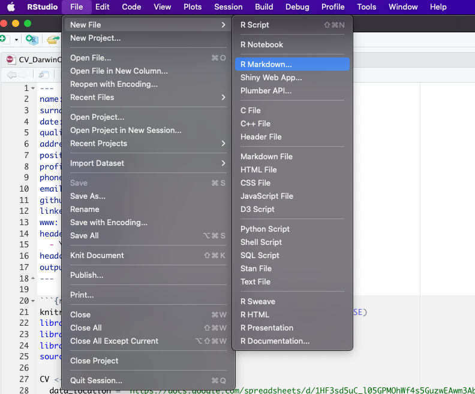
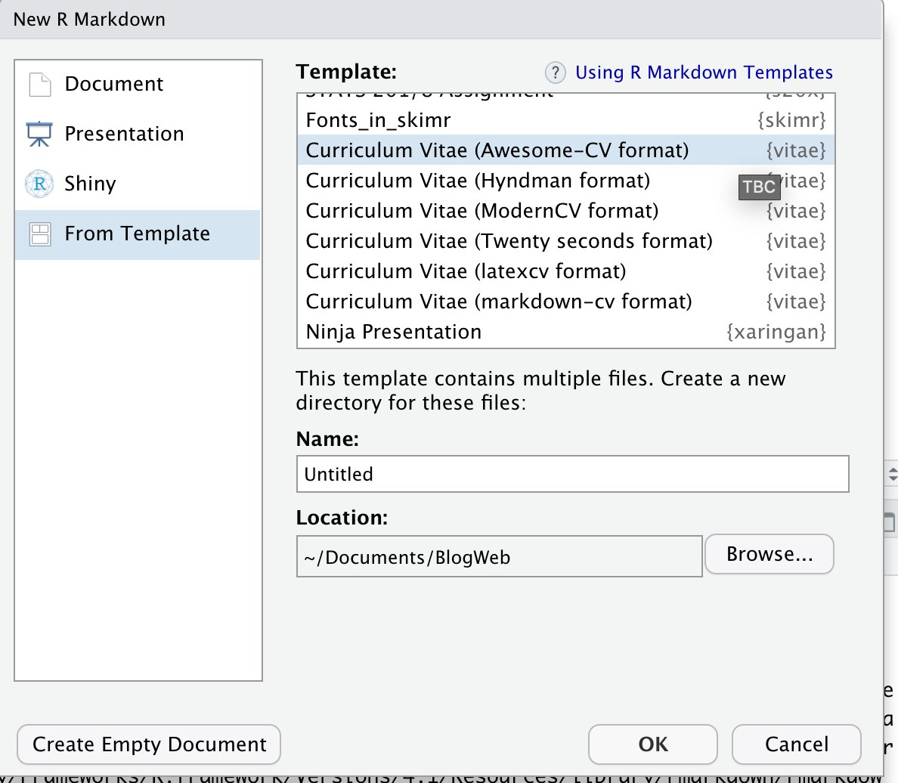
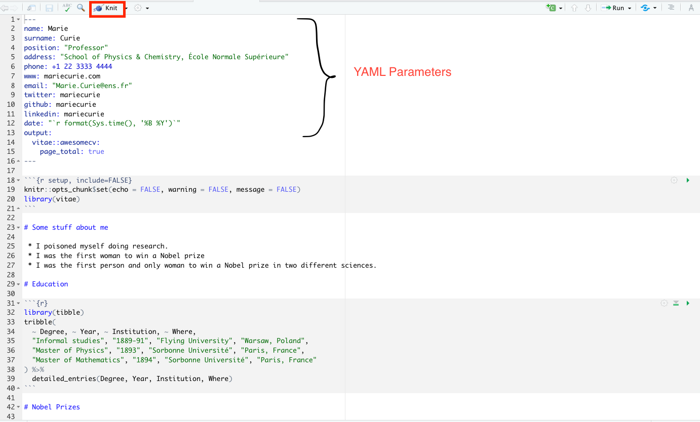
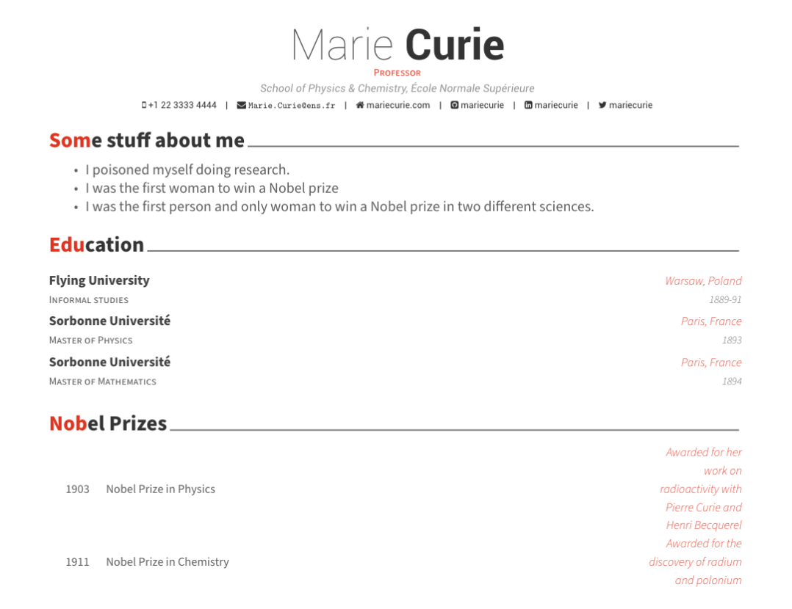
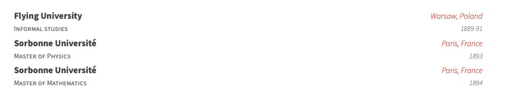
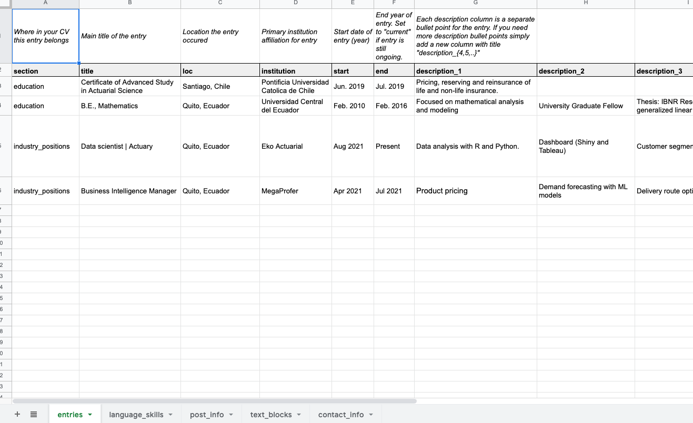

When entering the working world or looking for new job opportunities we have all been in the task of creating or updating our resume and almost always the main tool is Word, Canva or Adobe Illustrator (for the more advanced). The last two options, although they offer a lot of customization in terms of design, do not allow much flexibility when updating information or easily adapting to a workflow. On the other hand, Word has templates with somewhat bland designs and the constant struggle with alignments, indents and styles when entering new information.
A couple of years ago I was confronted with this problem and I was lucky to find the solution in the vitae package developed by Mitchell O’Hara-Wild. This package allows you to create a cv with 6 types of formatting:
Here you can see the examples of the different formats together with their source code. Personally I like the Awesome-CV template and in fact this whole tutorial is developed focused on this style of cv.
First you must create a project in Rstudio because we will take advantage of git version control, in this link you can find the step by step of how to create a project with git version control.
The first step is to install the vitae package
install.packages("vitae")and then create an awesome cv template with markdown
  This will create the following template
 To compile you must click on ‘Knit’ and you will have the following pdf
 In the YAML parameters you can specify data such as name, position, address, email, etc. Here you can find more details about each available parameter.
The data for the cv is entered in a tribble and transformed to awesome format with the detailed_entries() function that has the parameters:
There is also function brief_entries(data, what, when, with, .protect = TRUE) which is similar but with less arguments. For more information about these functions you can type in the console ?detailed_entries or ?brief_entries.
The following code
tribble(
~ Degree, ~ Year, ~ Institution, ~ Where,
"Informal studies", "1889-91", "Flying University", "Warsaw, Poland",
"Master of Physics", "1893", "Sorbonne Université", "Paris, France",
"Master of Mathematics", "1894", "Sorbonne Université", "Paris, France"
) %>%
detailed_entries(Degree, Year, Institution, Where)compiling to pdf will create
 At this point you will have created a functional cv and will not need to worry about layout, indentation or text alignment. But it is still cumbersome to have the data and the code in the same place. To solve this problem I took the workflow from the datadrivencv package created by Nick Strayer as a basis.
We will use the googlesheets4 package to download the cv data from a google spreadsheet. I suggest copying my sheet and replacing its data.
 The document has the following:
The following function allows to create an object with all the information of the spreadsheet,
create_CV_object <- function(data_location,
pdf_mode = FALSE,
sheet_is_publicly_readable = TRUE) {
cv <- list(
pdf_mode = pdf_mode,
links = c()
)
is_google_sheets_location <- stringr::str_detect(data_location, "docs\\.google\\.com")
if(is_google_sheets_location){
if(sheet_is_publicly_readable){
# This tells google sheets to not try and authenticate. Note that this will only
# work if your sheet has sharing set to "anyone with link can view"
googlesheets4::gs4_deauth()
} else {
# My info is in a public sheet so there's no need to do authentication but if you want
# to use a private sheet, then this is the way you need to do it.
# designate project-specific cache so we can render Rmd without problems
options(gargle_oauth_cache = ".secrets")
}
read_gsheet <- function(sheet_id){
googlesheets4::read_sheet(data_location, sheet = sheet_id, skip = 1, col_types = "c")
}
cv$entries_data <- read_gsheet(sheet_id = "entries")
cv$skills <- read_gsheet(sheet_id = "language_skills")
cv$text_blocks <- read_gsheet(sheet_id = "text_blocks")
cv$contact_info <- read_gsheet(sheet_id = "contact_info")
cv$post_info <- read_gsheet(sheet_id = "post_info")
} else {
# Want to go old-school with csvs?
cv$entries_data <- readr::read_csv(paste0(data_location, "entries.csv"), skip = 1)
cv$skills <- readr::read_csv(paste0(data_location, "language_skills.csv"), skip = 1)
cv$text_blocks <- readr::read_csv(paste0(data_location, "text_blocks.csv"), skip = 1)
cv$contact_info <- readr::read_csv(paste0(data_location, "contact_info.csv"), skip = 1)
cv$post_info <- readr::read_csv(paste0(data_location, "post_info.csv"), skip = 1)
}
extract_year <- function(dates){
date_year <- stringr::str_extract(dates, "(20|19)[0-9]{2}")
date_year[is.na(date_year)] <- lubridate::year(lubridate::ymd(Sys.Date())) + 10
date_year
}
parse_dates <- function(dates){
date_month <- stringr::str_extract(dates, "(\\w+|\\d+)(?=(\\s|\\/|-)(20|19)[0-9]{2})")
date_month[is.na(date_month)] <- "1"
paste("1", date_month, extract_year(dates), sep = "-") %>%
lubridate::dmy()
}
# Clean up entries dataframe to format we need it for printing
cv$entries_data %<>%
tidyr::unite(
tidyr::starts_with('description'),
col = "description_bullets",
sep = "\n- ",
na.rm = TRUE
) %>%
dplyr::mutate(description_bullets = as.list(strsplit(description_bullets , "\n- ")) ) %>%
dplyr::mutate(
# description_bullets = ifelse(description_bullets != "", paste0("- ", description_bullets), ""),
start = ifelse(start == "NULL", NA, start),
end = ifelse(end == "NULL", NA, end),
start_year = extract_year(start),
end_year = extract_year(end),
no_start = is.na(start),
has_start = !no_start,
no_end = is.na(end),
has_end = !no_end,
timeline = dplyr::case_when(
no_start & no_end ~ "N/A",
no_start & has_end ~ as.character(end),
has_start & no_end ~ paste("Current", "-", start),
TRUE ~ paste(end, "-", start)
)
) %>%
dplyr::arrange(desc(parse_dates(end))) %>%
dplyr::mutate_all(~ ifelse(is.na(.), 'N/A', .))
cv
}This function removes links from a text
sanitize_links <- function(cv, text){
if(cv$pdf_mode){
link_titles <- stringr::str_extract_all(text, '(?<=\\[).+?(?=\\])')[[1]]
link_destinations <- stringr::str_extract_all(text, '(?<=\\().+?(?=\\))')[[1]]
n_links <- length(cv$links)
n_new_links <- length(link_titles)
if(n_new_links > 0){
# add links to links array
cv$links <- c(cv$links, link_destinations)
# Build map of link destination to superscript
link_superscript_mappings <- purrr::set_names(
paste0("<sup>", (1:n_new_links) + n_links, "</sup>"),
paste0("(", link_destinations, ")")
)
# Replace the link destination and remove square brackets for title
text <- text %>%
stringr::str_replace_all(stringr::fixed(link_superscript_mappings)) %>%
stringr::str_replace_all('\\[(.+?)\\]', "\\1")
}
}
list(cv = cv, text = text)
}You also need functions to print the downloaded data.
# print text block
print_text_block <- function(cv, label){
text_block <- dplyr::filter(cv$text_blocks, loc == label) %>%
dplyr::pull(text)
strip_res <- sanitize_links(cv, text_block)
cat(strip_res$text)
invisible(strip_res$cv)
}
# print table of skills
print_skill <- function(cv){
glue_template <- "
\\cvskill{<<group>>}{<<skills>>}"
skills_formatted <- cv$skills %>%
mutate(skill = if_else(is.na(details)|details=="", glue::glue("{skill}"), glue::glue("{skill} ({details})"))) %>%
group_by(group) %>%
summarize(skills = glue::glue_collapse(skill, sep = ", "))
cv_skill <- skills_formatted %>%
glue::glue_data(glue_template, .open = "<<", .close = ">>" ) %>%
paste0(., collapse = '\n')
cv_skill_env <- paste0('\n\\begin{cvskills}\n', cv_skill, '\n\\end{cvskills}\n' , collapse= '\n')
cat(cv_skill_env)
invisible(cv)
}
# print table of posts
print_post<- function(cv, glue_template = "default"){
if(glue_template == "default"){
glue_template <- "
- [{name}]({link})
\n"
}
print(glue::glue_data(cv$post_info , glue_template))
invisible(cv)
}Okay, now let’s replace
knitr::opts_chunk$set(echo = FALSE, warning = FALSE, message = FALSE)
library(vitae)with this, so we can use the previous functions
knitr::opts_chunk$set(echo = FALSE, warning = FALSE, message = FALSE)
library(vitae)
library(dplyr)
library(magrittr)
source("Utils/data_download_funs.R")
CV <- create_CV_object(
data_location = "https://docs.google.com/spreadsheets/d/19YWFjpiCqTbrwrU1hpxDNubZKoNi-o0DvOQbcHqsc7c/edit?usp=sharing",
pdf_mode = FALSE
)For the Education section we can replace
library(tibble)
tribble(
~ Degree, ~ Year, ~ Institution, ~ Where,
"Informal studies", "1889-91", "Flying University", "Warsaw, Poland",
"Master of Physics", "1893", "Sorbonne Université", "Paris, France",
"Master of Mathematics", "1894", "Sorbonne Université", "Paris, France"
) %>%
detailed_entries(what = Degree, when = Year, with = Institution, where = Where)with this
CV$entries_data %>%
filter(section == 'education') %>%
detailed_entries(
what = institution,
when = glue::glue("{`start`} - {`end`}"),
with = title,
where = loc,
why = description_bullets
)To print your skills
CV %>% print_skill()To print your posts
CV %<>% print_post()All files are hosted here.
I want to thank Nick Strayer and Mitchell O’Hara-Wild for the wonderful work done on the vitae and datadrivencv package.